ん？なんか進化したって？
気のせいじゃない。？
ってなことで
・第0章 1部 Javaについて
・第0章 2部 JDKのインストール
・第0章 3部 IDEAのインストール
第0章 1部 Javaについて
Javaとはいったいどんな言語でしょうか。
JavaとはどのOSでも同じように動くように作られたプログラム言語です。
例えば
Windowsで作ったプログラムをMacOSでも動かすことが可能なのです。
普段Windowsで作ったC言語やC++言語をMacOSで動かすことは不可能です。(C#はMicrosoftの.NETなのでそもそも違う)
でもこのJavaなら可能なんです！！
なぜかって？
それはJavaはPCの上で直接動かしてないからなのです！！
JavaはまずPCの中にJVM(Java Virtual Machine)という仮想マシンを起動します。
その中でバイトコードを読み込んでプログラムを実行しているのです！！
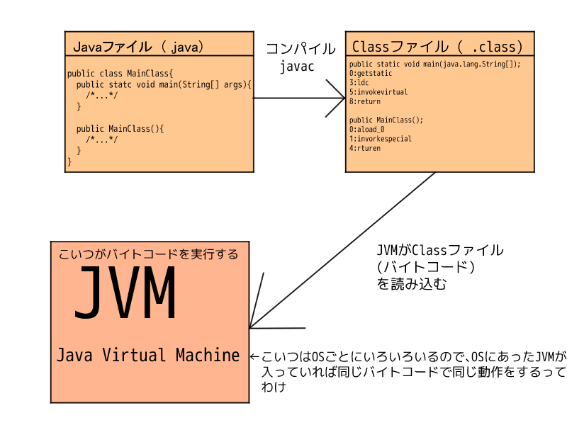
こんな感じです
つまりJavaはOS間を又に掛けた言語なのです！！
凄いでしょ！！Javaについて知りたくなってきたでしょ！！
え？「ネイティブに動いてないから重いんでしょ？」
だって？
あの有名なPCゲーム「Minecraft」もこのJavaで作られています！！
つまりJavaを覚えればやろうとすればあのようなゲームが作れます！！
そして、Modも作れます！！
「でも、お高いんでしょ」
いいえJavaの実行環境(JRE)も、開発環境(JDK)も無料です！！
もちろん開発に必要なエディターもフリーで高機能なのがあります！！
今回はIntelliJ IDEA を使用して、解説を進めていきます。
ほかにEclipse等でも可能です。
第0章 2部 JDKのインストール
では早速JDKをインストールしましょう。
JDKとはJava Development Kitの略です。
簡単に言うとJavaの開発に必要な物です。詳しくはここを見てね
1. JDKをダウンロードする
ここから自分に合ったJDKをダウンロードしましょう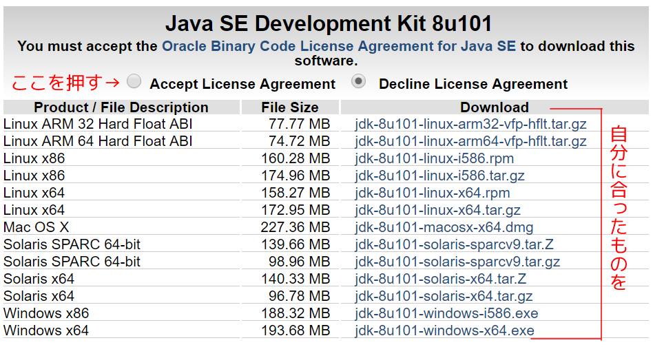
2. JDKのインストール
ダウンロードしてきたファイルを実行しましょう。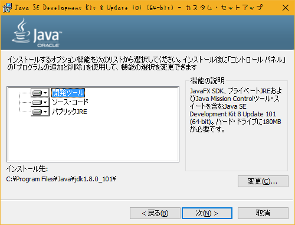
この画面が出てきても特に何も変えずに次へ。
そのあと、コピー先フォルダという項目が出てきても何もせずにそのまま次へ。
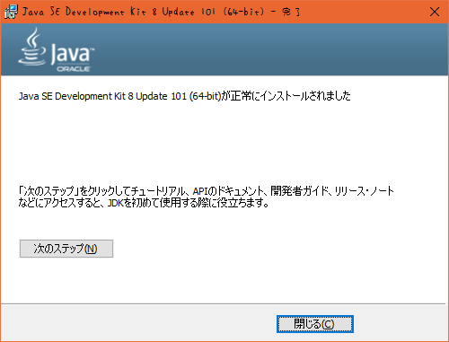
この画面が出てきたら成功です。
3. JavaDocのダウンロード
あと、どうせなので日本語JavaDocも取っておきましょう。ここからダウンロード
zipファイルはとりあえず マイドキュメントにJavaというファイルを作ってそこに入れておきましょう。
で、インストールはまだ終わっていません。
４. 環境変数の設定
コントロールパネル→システム→システムの詳細設定→一番下の環境を開きましょう。
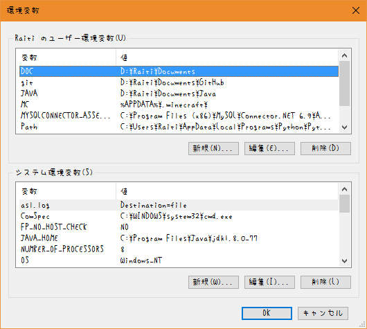
こんなのが出てきますね。
上下両方の中にJAVA_HOMEという変数が無いか探しましょう。
無ければ、新規を押し、環境変数名をJAVA_HOME
値をさっきインストールしたJDKの場所(デフォルトなら C:\Program Files\Java\jdk"インストールしたバージョン"\)を指定します。
今回インストールしたバージョンは 1.8.0_101なのでふつうは C:\Program Files\Java\jdk1.8.0_101\ となるはずです。
JAVA_HOMEという値があった場合ダブルクリックして値を書き換えましょう。
次にpathという変数を探します。
これはすでにある場合が多いです。
無い場合は作りましょう。
あった場合は選択して、編集をクリックします。すると、さっき出てきた感じのウィンドウが出るか、変わったウィンドウが出るかの2パターンがあります。
さっきのが出てきた場合は、値の一番後ろに ; %JAVA_HOME%\bin\と追加しましょう
セミコロンを忘れないでください。
で、別のパターンというのは、
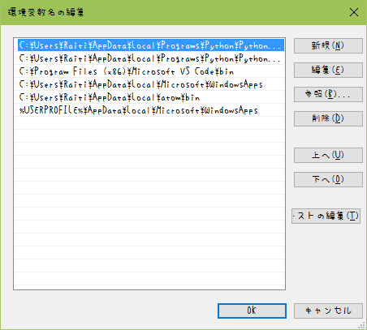
と出る場合があります。
こう出た場合は新規を押して、そこに%JAVA_HOME%\bin\と入力しましょう
そしてOKで閉じます。そしたらいったん再起動しましょう。
で、再起動が終わったら、コマンドプロンプトを開き、java -versionと入力してエンター
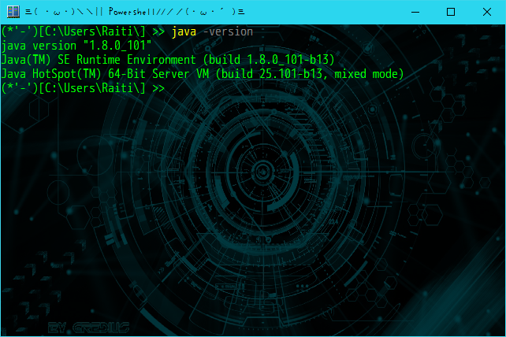
らいちたそは標準のコマンドプロンプトは使ってないから見た目が違うけど同じような物が出るはずだよ。
そしてこれが出たらJDKのインストールは完了だよ。お疲れ様！！。
第0章 3部 IDEAのインストール
IDEAは序盤は使わないんだけど、一応インストールしておこうか。
IDEAっていうのは、いわゆるIDE(統合開発環境 Integrated Development Environment)なんだよ。
統合開発環境 Wiki で、IDEAのダウンロードはここの下の方にあるよ
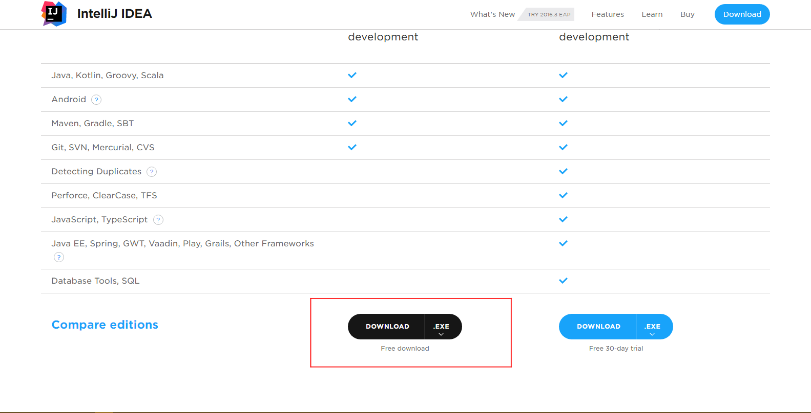
この赤いところだよー
なんか右側にもあるけど、それは有料版。
Javaだけの開発なら左のフリー版だけで十分!!
ちなみに".exe"ってところを押すと、他のOS用に変えられるよ。
なんか押すとE-maleの登録フォームあるけど無視してもOKだった気がする。
ダウンロードが終わったら実行してみよう。
出てきたダイアログは次の画像の通りに
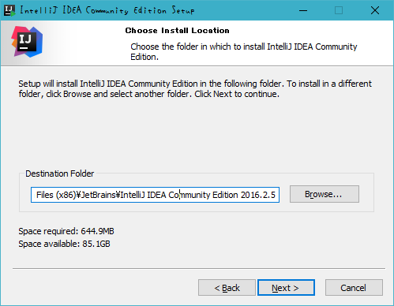
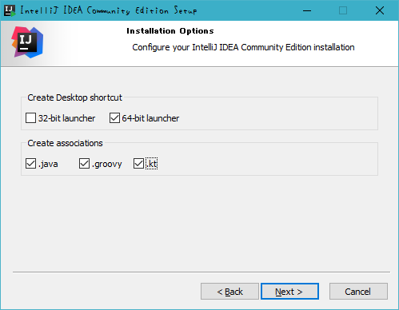
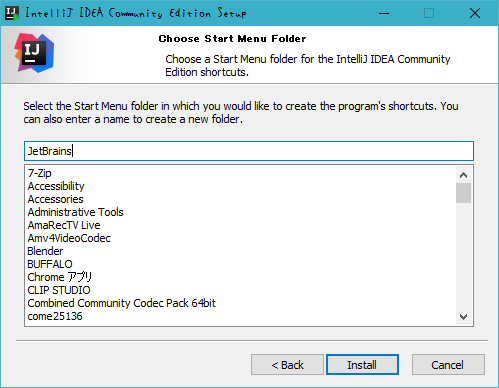
そしたら最後のダイアログの"Run IntelliJ IDEA ～"ってところにチェックを入れてFinish!! なんかいろいろ出てくると思うけど、それは頑張って。
らいちたそは1度インストールしちゃったからその画面は初期化しないと出てこないの(´;ω;｀)
だから、英語読んで頑張って。
そして最後に "Welcom to IntelliJ IDEA" ってダイアログが出ると思うの。
そしたらIDEAのインストールはおしまい
そして第0章もおしまい。
ここまでお疲れ様ね。(*´∇｀*)ｵﾂｶﾚｻﾏー
ってことで次回からJavaのコードを書いていきつつ、Javaについて勉強していくよ。
ではー
Java解説トップ